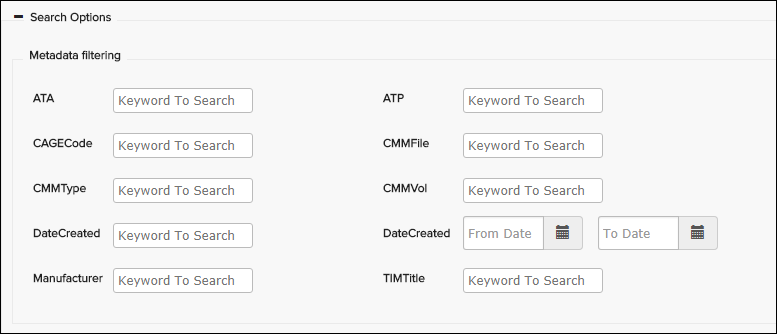
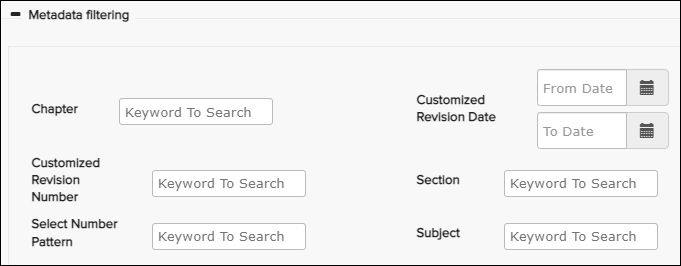
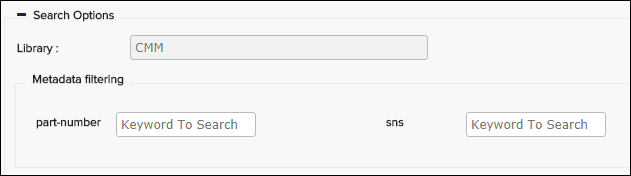

The default Full Text Search panel can be used to search for text that exists in the selected publications, including any supported attachments with machine readable text data. Its options can vary depending on configuration and the type of data, so certain fields will not appear. Here is an example of the dialog:

Example Full Text Search

Example Full Text Search - Additional Search Options
For some data types, the Full Text Search includes a Metadata filtering section, which can contain filtering options for metadata available in Knowledge Center.
For the CMM and XWB builders, the Metadata filtering appears as shown in this screenshot.

CMM/CWB Search Options with Metadata filtering

PDF Search Options with Metadata filtering
For C-Series CMM publications of publication type BACMP, the Metadata filtering section can have part-number and sns fields:

C-Series CMM (BACMP) Search Options with Metadata Filtering
The table that follows describes example search options in Full Text Search.
| Component | Description |
|---|---|
| Text | The keyword or phrase you want to search for in the selected publications, including any supported attachments with machine readable text data. |
| Select | The Select menu helps the user to easily insert search operators and wildcards in the search field. Refer to Search Operators and Wildcards in Full Text Search for operator/wildcard instructions and examples. |
| Exact Match | Activate this option to return an exact match of the entered text, typically useful when searching for a phrase. |
| Simple/Complex | For iSpec, S1000D, and PDF builder publications only. Select Simple to perform a search using Chapter-Section-Subject, Chapter-Section, or Chapter. Select Complex to perform a search using the options available in the Reference field drop-down menus. |
| Function | For iSpec, S1000D, and PDF builder publications only. Select one or more functions from the drop-down menu to reduce the scope of the search to the selected functions. |
| FIN |
This option appears for certain publications (such as ATA publications). Activate
this option if you want to search for a FIN.
Note: This option is not available for
A350 and C-Series data. To search for a FIN in these types of publications, use
the Fin/Zone/Panel Search pane. Refer to FIN/Zone/Panel Search.
If FIN is activated, the Exact Match is set true and the applicable set of publications are selected automatically in the Publications drop-down menu. |
| Part |
This option appears for parts publications (such as AIPC, EIPC, IPD, IPDP, and Panasonic_IPD). Activate this option if you want to search for a part number. When this option is activated, only IPD and AIPC publications are shown in the Publications drop-down menu. |
| Library | This non-editable field shows the selected Library folder that will be searched. If search is opened on the library level, you will not see the Publication field and it will automatically search across all publications in that library. |
| Publication Category | For iSpec, S1000D, and PDF builder publications only. Select one or more publication categories from the drop-down menu to reduce the scope of the search to the selected categories. |
| Reference | Field for searching for a complete or partial DMC. You can click on the
different DMC sections to bring up drop-down menus containing possible values. When
a DMC section has been filled, the next section is automatically opened with the
drop-down menu. You can use either the mouse pointer or the arrow keys to navigate
the drop-down lists. You can empty all fields by clicking on the
X button on the right hand side of the field. Note: The
default contents of the reference field (labels, tooltips etc.) can be customized
for different data types. For instructions, refer to the section "SNS Search
Configuration (for A350/XWB/S1000D/C-Series)" in Pinpoint Configuration
Guide.
|
| Publications | Drop-down list containing the publications available in the selected Library. In this drop-down menu, you can select one or multiple publications to search in. This also applies to PDF publications. |
| Code | For iSpec 2200 data, the ATA code refers to sections of the publication. The
ATA code is represented in this format: AA-BB-CC-DDD. If the additional search features are enabled, the ATA code field is hidden. You can select the Simple search option on the Full Text Search panel. Enter the ATA code in the Cha-Sec-Sub field. |
| Classifications | Drop-down menu allowing you to limit the search results to specific data module type. This menu can appear for non-Airbus S1000D context. |
| Metadata filtering | Metadata filtering options are available for publications built with the CMM,
C-Series, iSpec, PDF, S1000D, and XWB builders only. Note: If a builder is configured
for metadata kits, the data from the selected metadata kit in the Data Manager
Publish Publication pane is available to search with the
Metadata filtering option. Refer to the "Specifying Metadata for Folders and
Publications" topic in the Flatirons Pinpoint Configuration
Guide.
Note: Administrators, you can configure to show or hide
(default) the metadata filtering fields. If hidden, users can select the + (plus)
next to the Metadata filtering area to display the fields.
Refer to "Show/Hide Expanded Metadata Filtering" in the Flatirons Pinpoint
Configuration Guide for details.
|
The search is started by clicking on the Search button. If you need to clear the filter and start over again, click the Reset button. Refer to Perform a Full Text Search for more information.